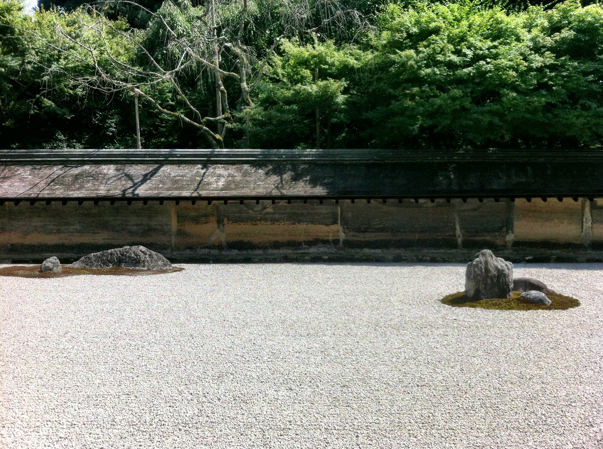
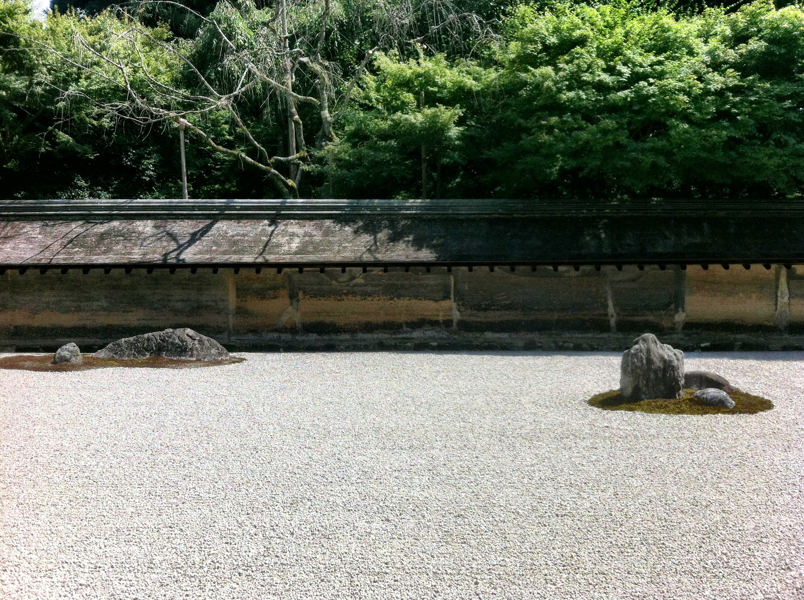

Ryoan-ji
Rock Garden
 



Pick any travel guide for Kyoto. I'm sure you’ll find Ryoan-ji, a Zen Buddhist temple famous for its Rock Garden (pictured above).
This zen garden is made of fifteen rocks, surrounded by patches of moss, laid out in the ocean of gravels on a walled rectangular plot.
And that's it…
If you have been to this garden, you must have been utterly puzzled during your visit. Too abstract and too minimal. I also scratched my head during my first visit to the garden. My second visit a year later didn’t help me figure out anything, either.
During the third visit, however, the whole garden started to make sense to me. It taught me how to live a happy life, with the layout of the fifteen rocks as the “textbook”.
Get the Viewpoint Right
The key to understand this cryptic garden is to see it from where you're supposed to: halfway between the left and right edges of this rectangular garden, indicated with the gray arrow in the floor plan below:
[image source]
My third visit to the garden was different from the previous ones in that I had this piece of knowledge, learned from a book on Japanese gardens. The book says that the whole garden was constructed to be seen from this viewpoint.
No Focal Point in the Garden
Once I sit down and see the garden from the correct viewpoint, the layout of fifteen rocks starts taking on its meaning: there is nothing emphasized in this garden.
Look straight ahead
There is no stone at the center of gaze When I look straight ahead. The landscape composition is split between two groups of rocks on the right and on the left. Nothing is really emphasized.
Look to the left
Next, I turn my head to the left while sitting in the same viewpoint. There is again nothing in the center of my vision. The view is split. Nothing is emphasised.
Look to the right

Finally, I turn my head to the right while still staying at the same viewpoint. There are three groups of rocks, but none of them stand out clearly. Location in the middle usually casts the spotlight, but the two rocks in the middle group look rather modest and are located off the center. Nothing is stressed in this view, either.
No Single Rock Dominates
The lack of emphasis, I then notice, penetrates into how fifteen rocks are arranged into five clusters, each surrounded by a patch of moss. Let’s start looking at the middle three clusters.
The middle-left
The middle-left cluster consists of two rocks. There is no center. The right elongated one dominates, but it is located to the right side, not at the center.
The middle
The middle cluster consists of three rocks. One on the left dominates, but it is again not located at the center but to the side.
The middle-right
The middle-right cluster consists of two rocks, each in a peculiar shape. But neither is emphasized more than the other.
The leftmost
The group of rocks furthest to the the left is the most magnificent composition in this garden if seen from the front of it. One large, well-shaped rock stands in the middle, flanked by two small standing rocks and two flat stones farther away. But the whole group is marginalized at the left edge of the garden, not at the center. When seen from the viewpoint, the symmetric composition is thus destroyed.
The rightmost
The group of rocks furthest to the right is made of three rocks. One large lying stone is flanked by two flat stones. This symmetric composition, however, is also marginalized at the edge of the garden, not in the center. The right flat stone even disappears from sight when seen from the viewpoint, as it hides behind the large rock.
The Rock Garden's Message
Now it is clear that nothing is emphasized throughout this garden. I start wondering why. The designer of this garden, who remains anonymous despite many attempts of historians to identify, must have had a purpose. What message did he or she try to convey to the visitors of this garden?
I remember that each rock in a zen garden is often interpreted as an unfulfilled desire in our mind. Once I see the rocks in Ryoan-ji Rock Garden as my own unfulfilled desires, the walled rectangular garden space begins to look like a metaphor of my inner self.
No emphasis on any of the fifteen rocks, I conclude, can therefore be interpreted as the following message:
Don’t fixate on one particular thing in our mind.
This idea is central to the preaching of Zen Buddhism to live a happy life. Don’t keep regretting what you’ve done in the past. Don’t always be worried about your uncertain future. Nothing should be at the center of your mind, just like the arrangement of these fifteen rocks within the walled rectangular plot.
...
That’s not easy, however. The lack of focus makes us feel uneasy. We want to fulfil our desires. There needs to be an element of calmness to accept the preaching of no emphasis.
Similar Shapes Unite Rocks
Ryoan-ji Rock Garden is kind enough to understand this human psyche. It visually calms us down by uniting the five groups of rocks with the similarity of rock shapes.
Pairs of flat stones
The leftmost group of rocks is connected to the rightmost with the pairs of flat flanking stones.
Squarish standing stones
The leftmost group of rocks is also connected to the middle one by the squarish standing stones.
Lying rocks
The middle left, the middle right, and the rightmost groups of stones are all connected by the shape of lying rocks that look like the back of beasts.
Unity Calms Us Down
The unity achieved by these similarities across the groups of rocks calms us down. If all these rocks took completely different shapes, we would be unable to relax at all and reluctant to accept the merit of having no emphasis in our mind.
The similarities are subtle, however. They never assert themselves at the center of the stage. The main character here is the lack of emphasis. The similarities of rock shapes are just the supporting actors, and they are good ones.
Garden as a Reminder
Ryoan-ji Rock Garden manages both to place no emphasis and to achieve the overall unity, creating the serenity that echoes the preaching of zen: the key for living a happy life is not to be preoccupied with one particular thing.
It is so easy to forget this simple principle of happiness in our everyday life. Whenever I get preoccupied too much with my unfulfilled desires, I pay a visit to Ryoan-ji Rock Garden, which has been there since the 16th century to remind us of an ideal way of life.